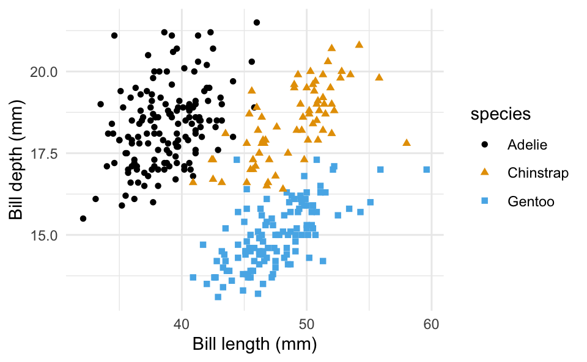

library(tidyverse)
library(ggthemes)
library(palmerpenguins)
library(gt)Hello, Penguins!
Data
For this analysis we’ll use the penguins dataset from the palmerpenguins package.
Species
The figure below is a bar plot of species of penguins.
ggplot(
penguins,
aes(
x = bill_length_mm, y = bill_depth_mm,
color = species, shape = species
)
) +
geom_point() +
theme_minimal() +
scale_color_colorblind() +
labs(x = "Bill length (mm)", y = "Bill depth (mm)")Warning: Removed 2 rows containing missing values (`geom_point()`).
Penguins
The table below shows the first 10 penguins from the dataset.
penguins |>
slice_head(n = 10) |>
select(species, island, bill_length_mm, bill_depth_mm) |>
gt()| species | island | bill_length_mm | bill_depth_mm |
|---|---|---|---|
| Adelie | Torgersen | 39.1 | 18.7 |
| Adelie | Torgersen | 39.5 | 17.4 |
| Adelie | Torgersen | 40.3 | 18.0 |
| Adelie | Torgersen | NA | NA |
| Adelie | Torgersen | 36.7 | 19.3 |
| Adelie | Torgersen | 39.3 | 20.6 |
| Adelie | Torgersen | 38.9 | 17.8 |
| Adelie | Torgersen | 39.2 | 19.6 |
| Adelie | Torgersen | 34.1 | 18.1 |
| Adelie | Torgersen | 42.0 | 20.2 |